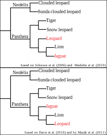
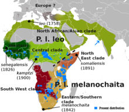
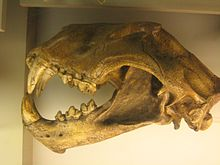
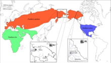

Etymology
The word 'lion' is derived from Latin: leo[4] and Ancient Greek: λέων (leon).[5] The word lavi (Hebrew: לָבִיא) may also be related.[6] The generic name Panthera is traceable to the classical Latin word 'panthēra' and the ancient Greek word πάνθηρ 'panther'. Panthera is phonetically similar to the Sanskrit word पाण्डर pând-ara meaning 'pale yellow, whitish, white'.[8]
Taxonomy

Felis leo was the scientific name used by Carl Linnaeus in 1758, who described the lion in his work Systema Naturae.[3] The genus name Panthera was coined by Lorenz Oken in 1816.[13] Between the mid-18th and mid-20th centuries, 26 lion specimens were described and proposed as subspecies, of which 11 were recognised as valid in 2005. They were distinguished mostly by the size and colour of their manes and skins.
Subspecies
In the 19th and 20th centuries, several lion type specimens were described and proposed as subspecies, with about a dozen recognised as valid taxa until 2017.[1] Between 2008 and 2016, IUCN Red List assessors used only two subspecific names: P. l. leo for African lion populations, and P. l. persica for the Asiatic lion population. In 2017, the Cat Classification Task Force of the Cat Specialist Group revised lion taxonomy, and recognises two subspecies based on results of several phylogeographic studies on lion evolution, namely:
- P. l. leo (Linnaeus, 1758) − the nominate lion subspecies includes the Asiatic lion, the regionally extinct Barbary lion, and lion populations in West and northern parts of Central Africa. Synonyms include P. l. persica (Meyer, 1826), P. l. senegalensis (Meyer, 1826), P. l. kamptzi (Matschie, 1900), and P. l. azandica (Allen, 1924). Multiple authors referred to it as 'northern lion' and 'northern subspecies'.
- P. l. melanochaita (Smith, 1842) − includes the extinct Cape lion and lion populations in East and Southern African regions.Synonyms include P. l. somaliensis (Noack 1891), P. l. massaica (Neumann, 1900), P. l. sabakiensis (Lönnberg, 1910), P. l. bleyenberghi (Lönnberg, 1914), P. l. roosevelti (Heller, 1914), P. l. nyanzae (Heller, 1914), P. l. hollisteri (Allen, 1924), P. l. krugeri (Roberts, 1929), P. l. vernayi (Roberts, 1948), and P. l. webbiensis (Zukowsky, 1964). It has been referred to as 'southern subspecies' and 'southern lion'.
However, there seems to be some degree of overlap between both groups in northern Central Africa. DNA analysis from a more recent study indicates, that Central African lions are derived from both northern and southern lions, as they cluster with P. leo leo in mtDNA-based phylogenies whereas their genomic DNA indicates a closer relationship with P. leo melanochaita.
Lion samples from some parts of the Ethiopian Highlands cluster genetically with those from Cameroon and Chad, while lions from other areas of Ethiopia cluster with samples from East Africa. Researchers therefore assume Ethiopia is a contact zone between the two subspecies. Genome-wide data of a wild-born historical lion sample from Sudan showed that it clustered with P. l. leo in mtDNA-based phylogenies, but with a high affinity to P. l. melanochaita. This result suggested that the taxonomic position of lions in Central Africa may require revision.
Fossil records
Other lion subspecies or sister species to the modern lion existed in prehistoric times:
- P. l. sinhaleyus was a fossil carnassial excavated in Sri Lanka, which was attributed to a lion. It is thought to have become extinct around 39,000 years ago.
- P. leo fossilis was larger than the modern lion and lived in the Middle Pleistocene. Bone fragments were excavated in caves in the United Kingdom, Germany, Italy and Czech Republic.
- P. spelaea, or the cave lion, lived in Eurasia and Beringia during the Late Pleistocene. It became extinct due to climate warming or human expansion latest by 11,900 years ago.[27] Bone fragments excavated in European, North Asian, Canadian and Alaskan caves indicate that it ranged from Europe across Siberia into western Alaska. It likely derived from P. fossilis,[29] and was genetically isolated and highly distinct from the modern lion in Africa and Eurasia. It is depicted in Paleolithic cave paintings, ivory carvings, and clay busts.[31]
- P. atrox, or the American lion, ranged in the Americas from Canada to possibly Patagonia. It arose when a cave lion population in Beringia became isolated south of the Cordilleran Ice Sheet about 370,000 years ago. A fossil from Edmonton dates to 11,355 ± 55 years ago.[35]
Evolution
blue P. atrox
green P. leo
Maximal range of the modern lion
and its prehistoric relatives
in the late Pleistocene
The Panthera lineage is estimated to have genetically diverged from the common ancestor of the Felidae around 9.32 to 4.47 million years ago to 11.75 to 0.97 million years ago, and the geographic origin of the genus is most likely northern Central Asia. Results of analyses differ in the phylogenetic relationship of the lion; it was thought to form a sister group with the jaguar (P. onca) that diverged 3.46 to 1.22 million years ago, but also with the leopard (P. pardus) that diverged 3.1 to 1.95 million years ago to 4.32 to 0.02 million years ago. Hybridisation between lion and snow leopard (P. uncia) ancestors possibly continued until about 2.1 million years ago. The lion-leopard clade was distributed in the Asian and African Palearctic since at least the early Pliocene. The earliest fossils recognisable as lions were found at Olduvai Gorge in Tanzania and are estimated to be up to 2 million years old.
Estimates for the divergence time of the modern and cave lion lineages range from 529,000 to 392,000 years ago based on mutation rate per generation time of the modern lion. There is no evidence for gene flow between the two lineages, indicating that they did not share the same geographic area.The Eurasian and American cave lions became extinct at the end of the last glacial period without mitochondrial descendants on other continents. The modern lion was probably widely distributed in Africa during the Middle Pleistocene and started to diverge in sub-Saharan Africa during the Late Pleistocene. Lion populations in East and Southern Africa became separated from populations in West and North Africa when the equatorial rainforest expanded 183,500 to 81,800 years ago.[41] They shared a common ancestor probably between 98,000 and 52,000 years ago.[22] Due to the expansion of the Sahara between 83,100 and 26,600 years ago, lion populations in West and North Africa became separated. As the rainforest decreased and thus gave rise to more open habitats, lions moved from West to Central Africa. Lions from North Africa dispersed to southern Europe and Asia between 38,800 and 8,300 years ago.[41]
Extinction of lions in southern Europe, North Africa and the Middle East interrupted gene flow between lion populations in Asia and Africa. Genetic evidence revealed numerous mutations in lion samples from East and Southern Africa, which indicates that this group has a longer evolutionary history than genetically less diverse lion samples from Asia and West and Central Africa.[42] A whole genome-wide sequence of lion samples showed that samples from West Africa shared alleles with samples from Southern Africa, and samples from Central Africa shared alleles with samples from Asia. This phenomenon indicates that Central Africa was a melting pot of lion populations after they had become isolated, possibly migrating through corridors in the Nile Basin during the early Holocene.[22]